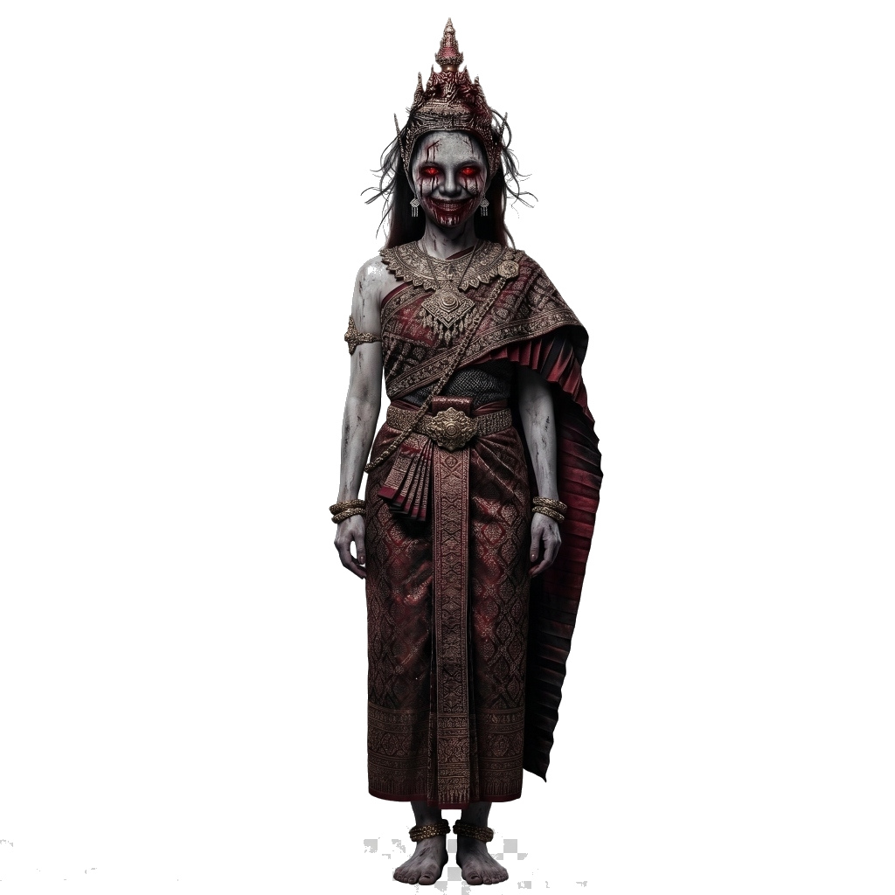

เลื่อนหน้าจอลงไปเกิน 800px ผีจะค่อยๆ สไลด์โผล่มาจากขวาล่าง และเมื่อเลื่อนเกิน 1500px ผีจะสไลด์กลับออกไป
ผีสไลด์เข้ามาอย่างนุ่มนวลด้วย transition-transform duration-700 ease-in-out และไม่ขวางการคลิกเพราะมี pointer-events-none
เมื่อเลื่อนเกิน 1500px หรือเลื่อนกลับขึ้นด้านบน ผีจะสไลด์หายไปด้วย translate-x-full